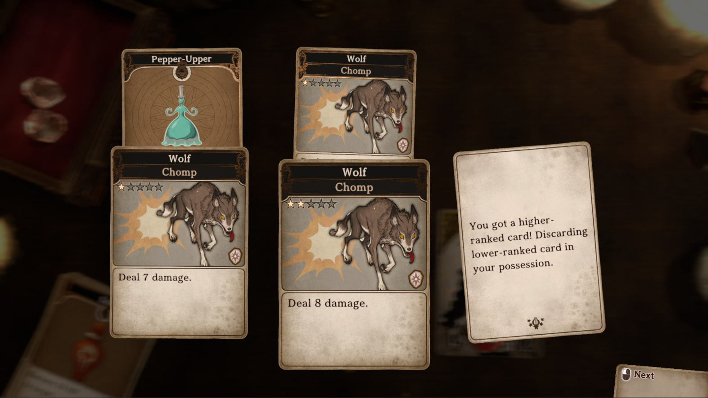
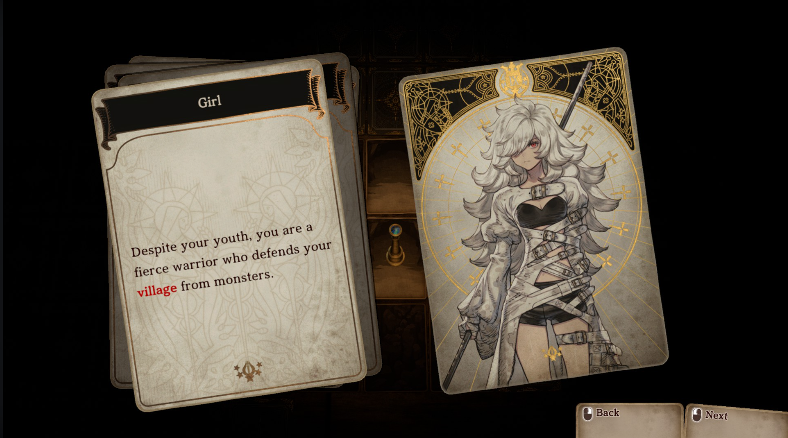
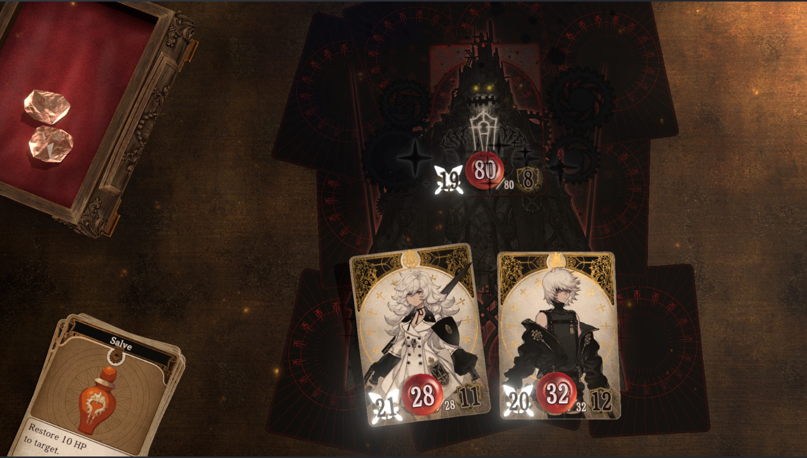
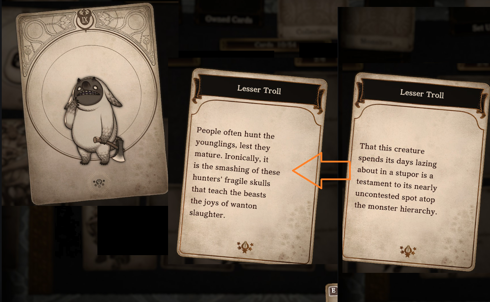

Sinopse: Esta é a história de uma garota que jurou vingança contra os monstros. Após perder sua casa, ela se une a um garoto misterioso e parte em direção ao desconhecido. Mas o que os aguarda no fim da jornada? Será a luz da esperança ou o desespero e a escuridão?
Sobre o Jogo: Voice of Cards é uma franquia de RPGs contada inteiramente através de cartas. Em The Beast of Burden, você pode aprisionar os monstros derrotados em cartas e usá-los como habilidades em combate.Viva uma experiência de jogo diferente, criada por YOKO TARO, Keiichi Okabe e Kimihiko Fujisaka.
Antes de começar a review, vale lembrar que sou fã de Yoko Taro. Conheci seu trabalho em NieR: Automata, e uma definição que poderia descrevê-lo é que ele é um dos "filhos de Berserk" (mangá de Kentaro Miura), ao lado do criador de Dark Souls, Hidetaka Miyazaki. Resumindo, a maioria dos jogos desses criadores são sombrios, ambientados em mundos devastados, e sempre apresentam finais que podem ser considerados "cruéis" para o jogador.
Keiichi Okabe é o compositor responsável pelas trilhas sonoras fantásticas de NieR. Ele fundou o estúdio Monaca, que também trabalha com trilhas sonoras para outros jogos. Um dos trabalhos mais recentes que lembro é Stellar Blade, lançado no ano passado. Por fim, Kimihiko Fujisaka é o designer que trabalhou em Drakengard 3 e nos NieR.
Durante a pandemia, essa equipe iniciou uma trilogia que não teria relação com a franquia Drakengard/NieR, enquanto paralelamente eram produzidos NieR Replicant Remake e NieR Reincarnation (jogo para celular). Os jogos Voice of Cards foram desenvolvidos com um orçamento menor e uma equipe reduzida, mas contaram com a participação de pessoas muito talentosas, como Yoko Taro e Keiichi Okabe.
A mecânica do jogo combina muito comigo, pois adoro RPGs de turno. Apesar do formato de cartas, o sistema de batalha é totalmente baseado em turnos, com atributos como vida, ataque e defesa, além de um sistema de "gemas" usadas para ativar habilidades.
Um detalhe interessante é a mecânica de "roubar" habilidades de monstros em diferentes níveis, lembrando um pouco uma mistura de Shin Megami Tensei com Clair Obscur: Expedition 33 (ainda a ser lançado). Essa mecânica de coletar cartas melhoradas me deixou viciado, e talvez por isso o chefe final tenha sido fácil para mim. Também existe um sistema de aprimoramento de cartas, que pode trazer recompensas ao jogador, mas depende de sorte para encontrar o baú correto.
O design dos personagens e monstros é muito bom, especialmente no final do jogo, onde acontecem alguns eventos marcantes (sem spoilers). Minha única crítica é a falta de mais ilustrações em batalhas contra chefes. Das sete batalhas principais, apenas quatro contam com essas artes, e elas são incríveis. Seria muito bom ver mais desse estilo visual durante o jogo.
 A trilha sonora acompanha muito bem a jornada, sabendo capturar a atmosfera dos momentos mais importantes. Sempre que um novo desafio surge, a música reflete essa tensão. Apenas uma faixa específica me desagradou um pouco, a ponto de me fazer desejar mudar a música manualmente.
A história é excelente. Começa com um desejo de vingança, mas logo faz o jogador questionar seus próprios atos — característica marcante dos jogos de Yoko Taro. O final ainda entrega um plot twist muito bom. Um detalhe interessante sobre as cartas é que elas também contam histórias. Para desbloqueá-las, é necessário derrotar certos monstros entre 10 e 20 vezes. No caso dos personagens principais, basta avançar na história.
O jogo é bem acessível, podendo ser jogado apenas com o teclado ou apenas com o mouse, o que faz sentido para um jogo de cartas por turno. Não encontrei problemas de bugs, e minha única crítica é a falta de localização para mais idiomas, especialmente nos textos.
Voice of Cards: The Beast of Burden é um jogo muito competente dentro da sua proposta. Sua história envolvente, mecânica viciante e trilha sonora de qualidade fazem dele um título memorável, especialmente para fãs do trabalho de Yoko Taro.
Apesar de algumas limitações gráficas e da falta de localização, a experiência geral é muito positiva. Se você gosta de RPGs de turno e histórias marcantes, esse jogo merece sua atenção.
Nota: 88
Voltar para a página principal